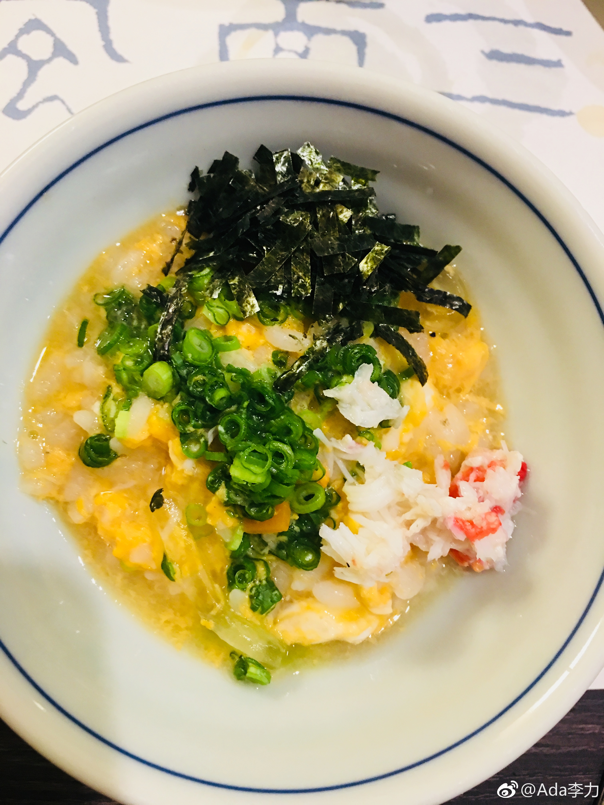

到日本东京的第一晚，聚餐吃河豚。
之前在国内吃的河豚是整只，鲫鱼大小。这次只见鱼的各种部位，猜测这鱼至少得半米长。有河豚精囊，意外地好吃。
每份量都很迷你，一份份地上，一盘盘地换，吃完九道后，吃撑了。但真停不住口，每道菜都好吃，包括我本来打定主意不吃的泡饭。
第一次见到纸火锅，纸烧不着的原理在中学化学里学过。但大家讨论了半天下面篾子编的篮子烧不着的原理，猜想跟电磁炉的加热原理有关，直接接触位置不是主要加热区。
之前在国内吃的河豚是整只，鲫鱼大小。这次只见鱼的各种部位，猜测这鱼至少得半米长。有河豚精囊，意外地好吃。
每份量都很迷你，一份份地上，一盘盘地换，吃完九道后，吃撑了。但真停不住口，每道菜都好吃，包括我本来打定主意不吃的泡饭。
第一次见到纸火锅，纸烧不着的原理在中学化学里学过。但大家讨论了半天下面篾子编的篮子烧不着的原理，猜想跟电磁炉的加热原理有关，直接接触位置不是主要加热区。


- 